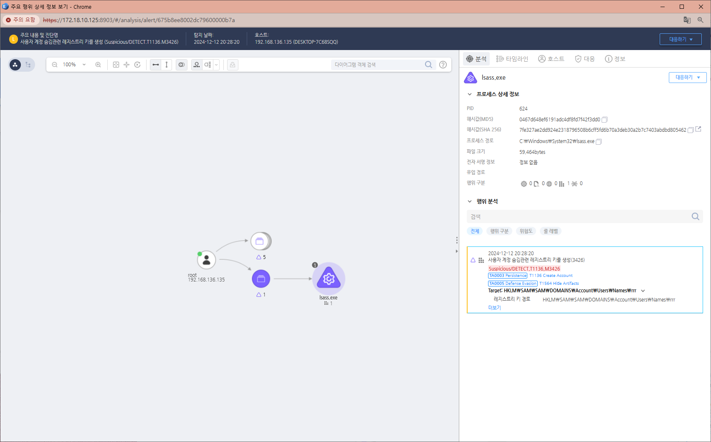

T1564.002.01 계정 숨김 처리
D3FEND
MITRE ATT&CK 액션을 기준으로 대응 방안을 작성
Detection
- Action : RegCreate AND
- RegKeyName : HKLM\SOFTWARE\Microsoft\Windows NT\CurrentVersion\Winlogon\SpecialAccounts\UserList
Detection(EDR)

Response
공격자가 생성한 레지스트리 키를 삭제합니다.
공격자에 의해 PC가 제어되었을 가능성이 있으므로 호스트 네트워크를 격리합니다.
Mitigations
- 권한 관리 및 감사 (Account Management & Auditing)
- 계정 권한 최소화:
- 시스템에 불필요한 관리자 권한을 가진 계정을 생성하지 않도록 보안 정책을 설정합니다.
- 사용자 계정의 생성, 수정, 삭제는 중앙 관리 시스템(예: Active Directory)에서 수행하고 로컬 시스템에서의 계정 변경을 제한합니다.
- 계정 사용 감사:
- 계정 생성 및 삭제 이벤트를 Windows 이벤트 로그(예: Event ID 4720 - 새 사용자 계정 생성, Event ID 4726 - 계정 삭제)나 SIEM을 통해 모니터링합니다.
- 레지스트리 및 설정 모니터링 (Registry & Configuration Monitoring)
- 숨겨진 계정 탐지:
- 공격자는 일반적으로 계정을 숨기기 위해 다음과 같은 레지스트리 경로를 수정합니다:
- 코드 복사
- HKEYLOCALMACHINE\SOFTWARE\Microsoft\Windows NT\CurrentVersion\Winlogon\SpecialAccounts\UserList
이 경로를 정기적으로 스캔하고, 숨겨진 계정(값이 0으로 설정된 계정)이 있는지 확인합니다.
- 레지스트리 변경 감사:
- 레지스트리 키 변경에 대한 이벤트 로그를 활성화하고(Windows Event ID 4657), 의심스러운 수정 활동을 탐지합니다.
- 계정 사용 제한 (Restrict Account Usage)
- 숨겨진 계정 비활성화:
- 발견된 숨겨진 계정을 즉시 비활성화하거나 삭제합니다.
- 로그온 제한:
- 특정 계정에 대해 로그온 권한(예: 원격 데스크톱 로그온)을 제한하여 계정 오용 가능성을 줄입니다.
- 로그 및 모니터링 (Logs and Monitoring)
- 비정상 계정 모니터링:
- SIEM이나 로그 분석 도구를 사용해, 새롭게 생성되었지만 의심스러운 활동을 보이는 계정을 감시합니다.
- 사용되지 않는 비활성 계정을 주기적으로 파악하고 정리합니다.
- 이벤트 중심 경고:
- 의심스러운 계정 생성, 권한 상승, 로그인 실패 시도 등을 탐지하여 경고를 생성하도록 시스템을 구성합니다.
- 정책 기반 제한 (Policy Enforcement)
- 그룹 정책:
- 로컬 계정에 대한 사용자 권한 관리를 그룹 정책(GPO)을 통해 강화합니다.
- GPO로 사용자 계정 생성, 레지스트리 편집기 실행 등의 액세스를 제한합니다.
- AppLocker 및 WDAC:
- 시스템에서 비인가된 도구(예: 레지스트리 편집기)를 차단하여 공격자가 레지스트리를 수정하지 못하도록 설정합니다.
- 교육 및 인식 (User Training & Awareness)
- 보안 담당자 교육:
- 숨겨진 계정을 사용하는 공격 기법과 탐지 방법에 대해 보안 팀에게 교육합니다.
- 사용자 계정 관리 절차:
- 계정 생성과 관리에 대한 표준 운영 절차(SOP)를 마련하고 이를 철저히 준수합니다.
- 정기적인 보안 점검 (Security Audits)
- 계정 목록 검토:
- 주기적으로 시스템의 로컬 계정과 네트워크 계정을 감사하여 비인가된 숨겨진 계정을 탐지합니다.
- 침해 흔적 분석:
- 시스템에 의심스러운 계정이 존재하거나 숨겨진 레지스트리 항목이 발견되면 포렌식 분석을 수행합니다.
- 자동화된 대응 도구 사용 (Automated Tools)
- 레지스트리 및 계정 분석 도구:
- PowerShell 스크립트나 커머셜 보안 솔루션을 사용해 숨겨진 계정을 자동으로 검색하고 대응합니다.
- EDR/XDR 도구 활용:
- 엔드포인트 탐지 및 대응(EDR) 솔루션을 통해 숨겨진 계정 관련 의심스러운 행위를 실시간으로 탐지합니다.
Affected Techniques
Action 실행시 함께 영향을 받는 다른 Techniqes
| ATT&CK |
| T1564.002 |
| T1136.002 |
| D3FEND |
| D3-SCA System Call Analysis |
| D3-FIM File Integrity Monitoring |